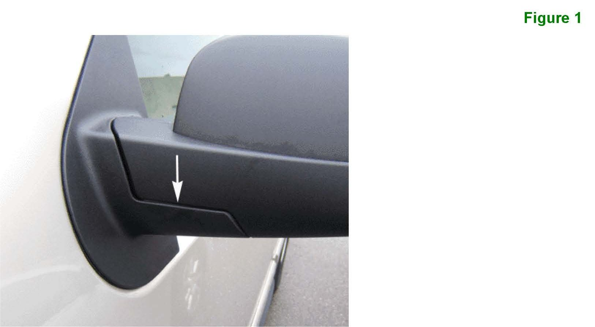
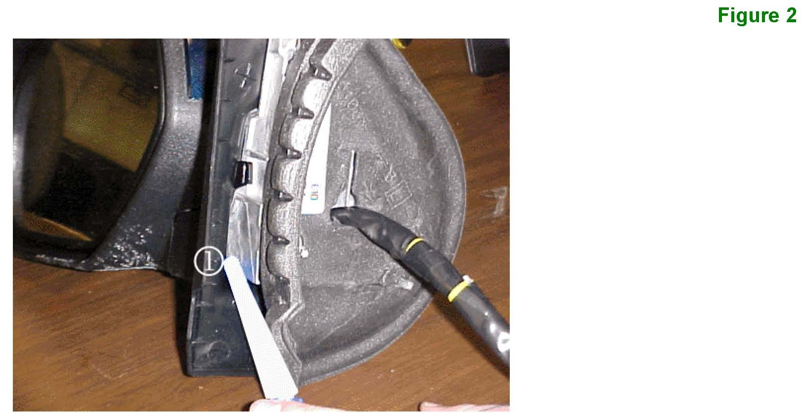
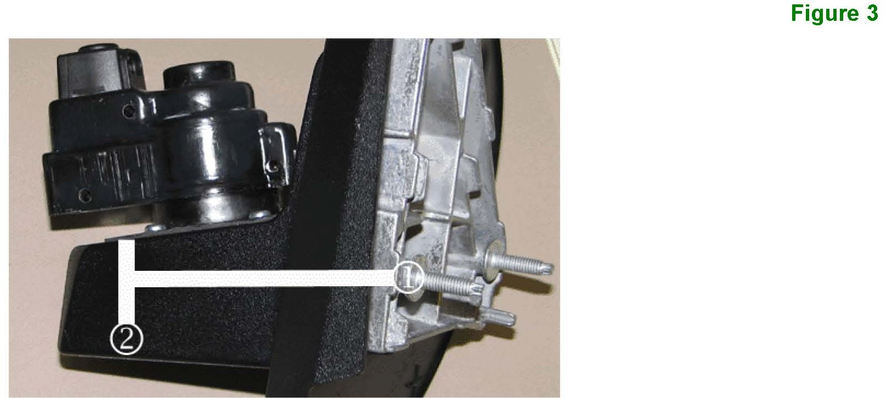
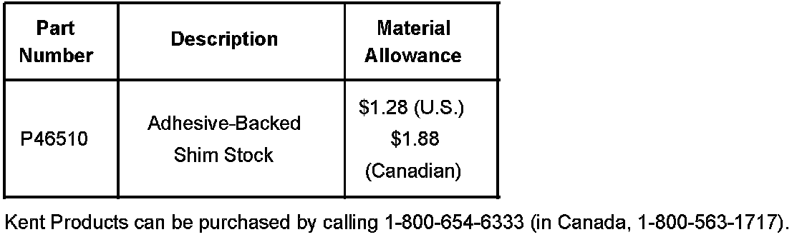
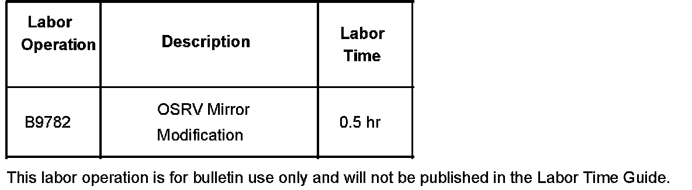

Body - Wind Whistle From Power Folding Mirrors
Bulletin No.: 06-08-64-012Date: March 17, 2006
TECHNICAL
Subject:
Power Folding Outside Rearview (OSRV) Mirror Whistle Noise (Add Foam)
Models:
2007 Cadillac Escalade
2007 Chevrolet Tahoe
2007 GMC Yukon
with Power Folding Mirror (RPO DL3)
Condition
Some customers may comment on a whistle noise coming from the driver's outside rearview mirror. When the mirror is folded in to the closed position, the whistle noise will not be heard.
Cause

The whistle noise may be caused by the mirror's pivot horizontal cutline gap allowing air into the mirror assembly. Refer to figure 1.
Correction
DO NOT REPLACE THE MIRROR ASSEMBLY.
Use the following procedure to add foam to the inside of the mirror assembly, which will reduce the gap at the mirror's pivot point.
1. Follow the procedure listed in SI to remove the OSRV mirror assembly from the door.
2. Place the mirror on a clean work surface in order to prevent any damage or scratches to the assembly.

3. Pull back the foam gasket material from the base of the mirror. There is no need to completely remove the gasket. Refer to figure 2.
Important:
For durability purposes, it is important to use the foam specified in this bulletin.

4. Refer to figure 3. Leave the adhesive tape on the foam. Using a ruler or flat-bladed tool, insert a (minimum 1" x 1") piece of foam 70 mm (2.7 in) (2) inboard from the inside edge (1) into the mirror housing between the aluminum casting and the plastic sail housing.

Parts Information
This foam is sold in 50' rolls. This roll will service 45 vehicles. Please return the unused portion to parts inventory for future use. Kent Products can be purchased by calling 1-800-654-6333 (in Canada 1-800-563-1717).
Warranty Information

For vehicles repaired under warranty, use the table.

Disclaimer